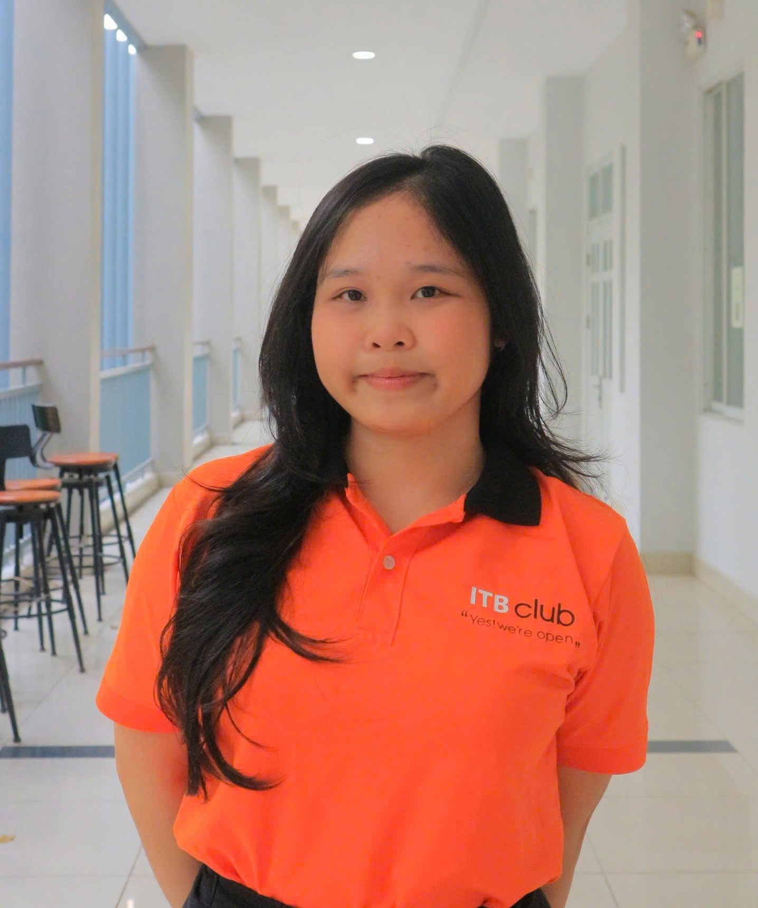

LinkedIn | nhidyk24416@st.uel.edu.vn | 0766 764 787
Third-year Management Information Systems student specializing in Digital Business and Artificial Intelligence, with a solid foundation in data analysis and business reporting. Skilled in querying and manipulating data using SQL and Python, with academic exposure to building dashboards and transforming datasets into actionable insights. Strong background in mathematical thinking, problem-solving, and cross-functional teamwork developed through student leadership roles. Highly motivated to secure a Data Analyst Intern position to support data-driven decision-making and further develop technical expertise in a fast-paced business environment.
University of Economics and Law - Vietnam National University HCM City
Major: Management Information Systems
Specialization: Digital Business and Artificial Intelligence
GPA: 3.31/4.00
Luong Van Chanh High School For The Gifted, Tuy Hoa Ward, Dak Lak Province
Mathematics Class
Member of Human Resources Department of DCD Debate Club
Member of Event Department of Information Technology for Business Club
Leader of Event Planner Team of Information Technology for Business Club
Role: System & Data Analyst (Lead Function 3 & Database Design)
Digital Marketing Analytics & Brand Health Dashboard (Pensilia Clinic)